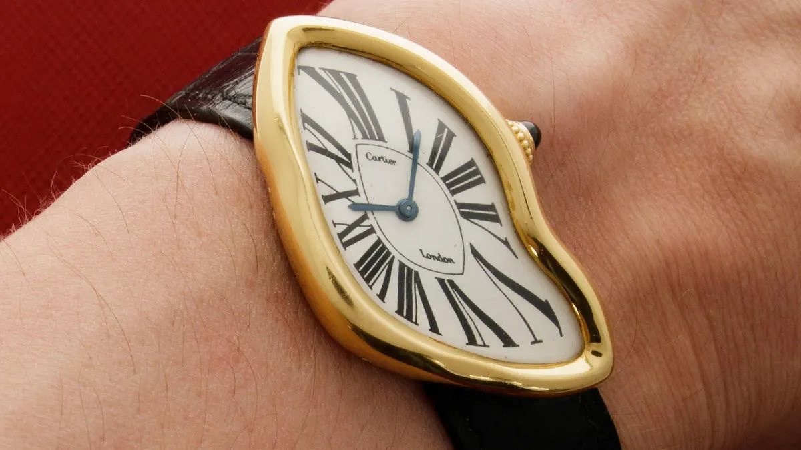

The watch is part of the Seiko 5 line, one of the brand's more luxurious collection.
This watch specifically has so many beautiful features. It has a black face, a polished bezel, automatic
movement, 30 meters of water resistance, the accented arabic numerals ad so much more. The watch case transitions smoothly
into the metal bracelet. Now this is a day/date watch, which means that in addition to telling the time,
it also gives the user, the day and date where the number would normally be. Now because this is an arabic watch,
the days are shown in English as well as Arabic. Fun Fact - The numerals, and both the hour and minute hand light
up in the dark.
This is my personal favroite watch in my collection. The uniqeness of the arabic on the watch drew me to it.
There is something unusally beautiful about the arabic language to me in additon to black being one of my favorite
colors. I can dress with watch up or down and it's such a stylist piece. Although it's the newest in my collection
it's definitely my all time favorite.
Now this watch was actually the first watch I ever bought. During spring break of my senior year
my highschool took an internation trip for two weeks to France and Spain. And in one of the malls of Paris, I say this
watch. I instatly loved it, but I asked for the price before immediately swiping my card. It was only around $50, which is
actually pretty cheap. For the rest of the trip people complimented how to really brought together my outfits and how the watch
itself was really nice. It quckly became one of my favorite purchases on that trip. It truly get me into watches and started my hobby
of collecting them. In my opinion, this watch looks like something James Bond or Tom Cruise might wear. The globe map tells World Time and
just looks futuristic. The battery life is 10 YEARS, it has 100-meters of water resistance and you can even check the time in another city if you want.

Now this next watch is not currently part of my collection, and for good reason. This watch is currently worth
over $300,000 but the originals can go well over one million dollares. This is the Cartier Crash and it is the peak of watch history, creativity and luxury. This watch was originally made
in the 1960's by the son of one of the founders of the brand, Jean-Jacques Cartier. He was inspired by "Swinging Sixties London". A
time where the British Capital was at the front of a revolution in fashion, music and consumer goods. The Crash was Jean-Jacques answer to
this new age on non-traditional style.
Now if you couldn't tell, my collection is filled with with unique and non-traditional styled watches. The Crash would be the crown jewel of mt collection.
Putting aside how expensive it is, this is such a luxurious watch. The warped bezel is typically solid 18k yellow gold but there are a few made of platinum which
are even more rare. This watch represents everything my collection is about all in one timepiece. It is truly perfect.